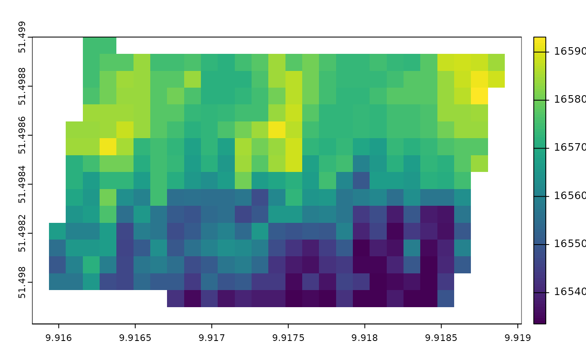

Getting-started
Getting-started.RmdSetup and Requirements
The cercospoRa package estimates the proportional
progress towards a Cercospora beticola epidemic on sugarbeet.
This requires formated hourly weather data in a format which the model
recognises. The R package epiphytoolR contains functions
which automatically checks the weather data and returns it in the
required hourly format.
We will need to install epiphytoolR
# install epiphytoolR package if it is not installed
if("epiphytoolR" %in% installed.packages()[,1] == FALSE){
remotes::install_github("PaulMelloy/epiphytoolR", dependencies = TRUE)
}
library(epiphytoolR)Format weather station data
This is data recorded by a weather station and contributed by Facundo Ramón Ispizua Yamati and is from a sugar beet field trial.
We will format the data so the model functions can recognise the data and won’t return errors due to inconsistencies and NAs which are common in weather data. This will require the user to think about how to replace the NAs or state default values to complete the dataset.
# format to data.table
wthr <- data.table(weathr)
# Use POSIXct formatted time.
wthr[,Time := as.POSIXct(paste0(Datum, " ",Stunde,":00"),tz = "UTC")]
# Nominate Latitude and Longitude location of the weather station.
# While not needed in cercospoRa some plant disease models will use location to
# decide the closest weather station to pull weather from
wthr[, c("lon","lat") := list(9.916,51.41866)]
# weather is hourly and will error if we don't specify a standard deviation of
# weather direction. This is intentional to force the user to decide how variable
# the wind direction data could be.
wthr[, wd_std := 20]
# remove all data after September as it contains missing data
wthr <- wthr[Datum < as.POSIXct("2022-10-01")]
# set NA wind speed values to zero
wthr[is.na(WG200),WG200 := 0]
# set NA wind direction values to 20 degrees. Wind is not important for this model
wthr[is.na(WR200),WR200 := 20]
#> Warning in `[.data.table`(wthr, is.na(WR200), `:=`(WR200, 20)): 20.000000 (type
#> 'double') at RHS position 1 taken as TRUE when assigning to type 'logical'
#> (column 10 named 'WR200')
wthr <- format_weather(wthr,
POSIXct_time = "Time",
time_zone = "UTC",
temp = "T200",
rain = "N100",
rh = "F200",
wd = "WR200",
ws = "WG200",
station = "Station",
lon = "lon",
lat = "lat",
wd_sd = "wd_std",
data_check = FALSE # this stops the function from checking for faults
)
# As the data is formatted closely enough for what is expected for the model.
# We can elect to turn the data_check off so Calculate epidemic onset
The following function calculates the earliest date from which a
cercospora leaf spot epidemic could commence. start and
end provide the time window for which the model should run.
Canopy closure (c_closure) indicates when the model should
start point for the model.
This date is determined by the negative prognosis models to be the last day for which a epidemic is likely not to start.
cercospoRa::calc_epidemic_onset(start = as.POSIXct("2022-04-25",tz = "UTC"),
end = as.POSIXct("2022-09-30",tz = "UTC"),
c_closure = as.POSIXct("2022-07-01",tz = "UTC"),
weather = wthr)
#> [1] "2022-07-17 UTC"Estimate canopy closure
Canopy closure is tradionally observed manually. The following methods permits canopy closure date estimation from remotley sensed data. UAV or satelite data can be used to produce georeferenced leaf area index (LAI) rasters.
# Get file location of example rasters with LAI values
image_files <- list.files(system.file("extdata", "uav_img",package = "cercospoRa"),
pattern = "tif",
full.names = TRUE)
# Read in data and check for consistancy
epidemic_onset_param <-
read_sb_growth_parameter(img_files = image_files,
img_dates = as.POSIXct(c("2022-06-14","2022-06-28"),
tz = "UTC"),
target_res = 10)
epidemic_onset_param
#> class : SpatRaster
#> dimensions : 17, 29, 2 (nrow, ncol, nlyr)
#> resolution : 0.0001103147, 6.885404e-05 (x, y)
#> extent : 9.915826, 9.919025, 51.49783, 51.499 (xmin, xmax, ymin, ymax)
#> coord. ref. : lon/lat WGS 84 (EPSG:4326)
#> source(s) : memory
#> names : 2022-06-14, 2022-06-28
#> min values : 0.5216454, 0.8607956
#> max values : 2.9568495, 3.3260000The next function calculates the sugar beet growth rate.
param_rxt <- calc_r_x0(epidemic_onset_param,
min_r = 0.02,
max_r = 0.05,
k = 6)Calculate canopy closure uses a logistic regression to estimate the canopy closure date for each raster cell.
canopy_closure <- calc_c_closure(param_rxt,
x1 = 1.3,
k=6)Finally we can use a specialised wrapper function to calculate the earliest possible onset of a cercospora leaf spot epidemic when chemical intervention might be needed.
epidemic_onset_map <-
calc_epidemic_onset_from_image(start =as.POSIXct("2022-04-25",tz = "UTC"),
end = as.POSIXct("2022-09-30",tz = "UTC"),
c_closure = canopy_closure,
weather = wthr)
epidemic_onset_map
#> class : SpatRaster
#> dimensions : 17, 29, 1 (nrow, ncol, nlyr)
#> resolution : 0.0001103147, 6.885404e-05 (x, y)
#> extent : 9.915826, 9.919025, 51.49783, 51.499 (xmin, xmax, ymin, ymax)
#> coord. ref. : lon/lat WGS 84 (EPSG:4326)
#> source(s) : memory
#> name : lyr.1
#> min value : 1653350400
#> max value : 1659312000plot the heterogeneity of onset date
terra::plot(epidemic_onset_map)
Convert numeric date back to POSIXct format
as.POSIXct(terra::values(epidemic_onset_map)[120:130],
tz = "UTC",
origin = "1970-01-01")
#> [1] "2022-07-22 UTC" "2022-07-22 UTC" "2022-07-22 UTC" "2022-07-21 UTC"
#> [5] "2022-07-14 UTC" "2022-07-14 UTC" "2022-07-09 UTC" "2022-07-08 UTC"
#> [9] "2022-07-09 UTC" "2022-07-11 UTC" "2022-07-11 UTC"